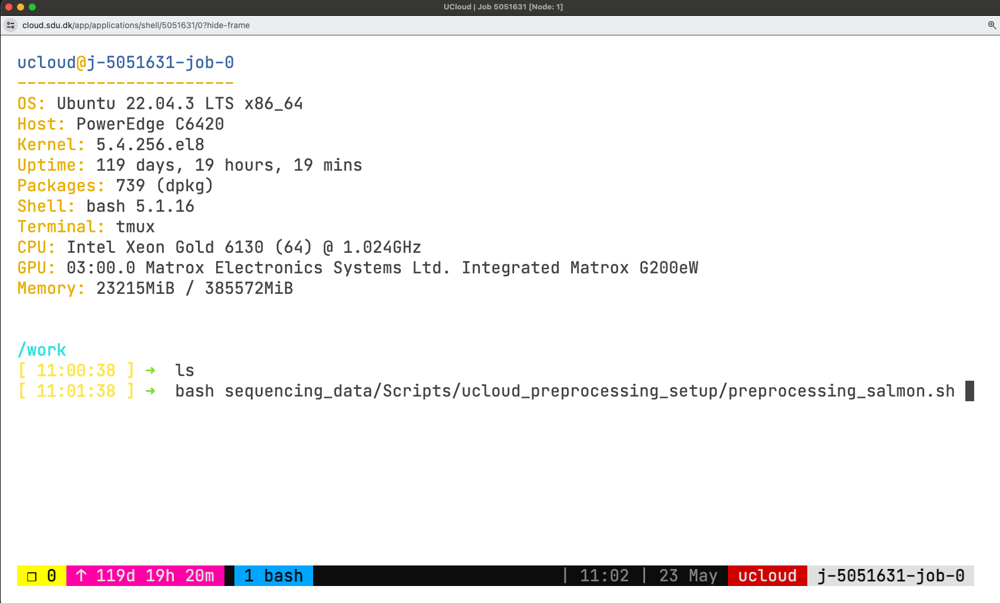
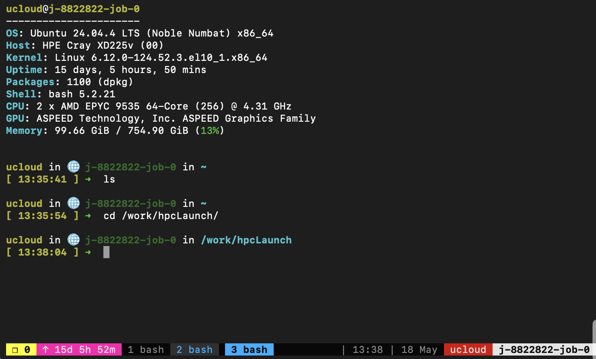

HPC file transfers
Let’s start a new UCloud job with SSH access and tmux enabled.
Submit a job from the terminal app and follow these configuration steps (job settings):
- Enter a job name (descriptive of the task, e.g.: Transfer myname)
- Select the time (in hours) we want to use a node for (it can be modified afterwards!). Let’s do 2h.
- Number of nodes: 1
- Machine type: and the machine type (selecting a 1 CPU standard node with 3GB memory).
- Additional Parameters. Enable tmux > true.
1. File integrity verification
We recommend using md5sum to verify data integrity, particularly when downloading large datasets, as it is a widely used tool. All data and files archived on Zenodo include an MD5 hash for this purpose. Let’s have a look at the content of a newly developed software fastmixture that estimates individual ancestry proportions from genotype data.
Open this Zenodo link
Enter the DOI of the repo (for all versions):
Tip: Zenodo assigns two types of DOIs — a concept DOI (version-independent, always resolves to the latest version) and a version-specific DOI for each individual release. On the record page, scroll to the bottom right and look for the “Cite all versions? You can use the concept DOI” section — that is the version-independent DOI we want here.
Zenodo offers an API at https://zenodo.org/api/, which functions similarly to the DOI API. This allows you to retrieve a BibTeX-formatted reference for a specific record (e.g.,
records/14106454) using either curl or wget.
Terminal
# ------curl-------
curl -LH 'Accept: application/x-bibtex' https://zenodo.org/api/records/14106454 \
--output meisner_2024.bib
# ------wget-------
wget --header="Accept: application/x-bibtex" -q \
https://zenodo.org/api/records/14106454 -O meisner_2024.bibDoes the content of your *.bib file look like this?
@misc{meisner_2024_14106454,
author = {Meisner, Jonas},
title = {Supplemental data for reproducing "Faster model-
based estimation of ancestry proportions"},
month = nov,
year = 2024,
publisher = {Zenodo},
version = {v0.93.4},
doi = {10.5281/zenodo.14106454},
url = {https://doi.org/10.5281/zenodo.14106454},
}- Scroll down to files and download the software zip file (
fastmixture-0.93.4.zip) using the command below:
Terminal
curl https://zenodo.org/records/14106454/files/fastmixture-0.93.4.zip \
--output fastmixture.zip Compute md5 hash and enter the value (no white-spaces)
Is your value tha same as the one shown on Zenodo
Finally, compute the sha256 digest (with program sha256) and enter the value
md5sum fastmixture.zip
sha256sum fastmixture.zipWe will be using the HLA database for this exercise. Important: go through the README before downloading! Check if a checksums file is included.
- Download the
md5checksum.txtfrom the IMGT HLA FTP directory:
Terminal
wget ftp://ftp.ebi.ac.uk/pub/databases/ipd/imgt/hla/md5checksum.txtNote: FTP links (e.g. ftp://ftp.ebi.ac.uk/pub/databases/ipd/imgt/hla/) do not open in standard browsers (Chrome, Edge). To browse the directory interactively, use a dedicated FTP client such as FileZilla or Cyberduck.
Look for the hash of the file
hla_prot.fastaCreate a bash script to download the target files (named “dw_resources.sh” in your current directory).
#!/bin/bash
md5file="md5checksum.txt"
# Define the URL of the files to download
url="ftp://ftp.ebi.ac.uk/pub/databases/ipd/imgt/hla/hla_prot.fasta"
# (Optional) Define a different filename to save the downloaded file (wget -O $out_filename)
# out_filename="imgt_hla_prot.fasta"
# Download the file
# wget $url --output $out_filename
# Verify checksums
md5sum --quiet --ignore-missing --check $md5fileWe recommend using --quiet so that only errors are printed (success is silent). The --ignore-missing argument lets you use the full checksums file while skipping files you have not downloaded.
What output do you get from the md5sum command? You will see that the checksum for hla_prot.fasta passes, but you may also get a FAILED result for another entry in the file (for example, md5checksum.txt itself or a related file). Think about why — was the file reprocessed, or was its checksum generated for a different version?
- Generate the md5 hash & compare to the one from the original
md5checksum.txt.
2. Synchronisation and transfer with rsync
To explore all rsync options would require a workshop on its own. Check the manual to learn more about the command.
2.1. Create a folder system containing rsync/data (inside the folder called hpcLaunch) and navigate to the data folder.
mkdir -p hpcLaunch/rsync/data
cd hpcLaunch/rsync2.2. Generate 100 files with extensions fastq and log in the data folder:
touch data/file{1..100}.fastq data/file{1..100}.log2.3. Check the data directory:
ls dataBackup copy
We are going to use rsync to create a backup copy of the data we just generated.
The syntax of rsync is pretty simple:
rsync OPTIONS ORIGIN(s) DESTINATIONAn archive (incremental) copy can be done with -a option. You can add a progress bar during the transfer with -P option. In this exercise, we want to exclude some files from the backup: we want to keep only those with fastq extension.
2.4. Run the following command:
rsync -aP --exclude="*.log" data backupThis will copy all the fastq files in backup/data.
2.5. Check the new folders with ls using a terminal.
Using data will copy the entire folder, while data/ will copy only its content! This is common to many other UNIX tools.
2.6. Change the first ten fastq files with some text:
for i in {1..10}; do { echo ATGC; echo TCCA; echo NNNN; echo NNNN; } >> data/file$i.fastq; done2.7. Use less file reader.
less?
less is ideal for exploring large text files—you can scroll using the arrow keys and exit by pressing q.
Check the documentation (man less or less --help) to learn how to search for specific text within a file.
Then open the file with less, explore its contents, and check which lines contain an N.
less data/file1.fastqWhile inside less, type /N and press enter. Is some text highlighted?
2.8. Finally, count how many lines contain at least one N in file1.fastq using the command grep. How many are there?
grep -c 'N' data/file1.fastq2.9. We also want to preserve earlier versions of any files that get updated. To do this, create a backup directory named with the current date and time (it will appear in your backup directory):
rsync -aP --exclude="*.log" \
--backup \
--backup-dir=versioning_$(date +%F_%T) \
data \
backupIf you create a folder called backup in your project folder, you can use versioning to store your analysis and results with incremental changes.
Transfer between local and remote
You can use the same approach to transfer and back up data between a remote system (in this case, UCloud) and a local machine (your PC/laptop). You need Linux, Mac or WSL/MobaXterm on the local host to perform rsync.
rsync is not available natively on Windows. For remote transfers over SSH, use scp instead (Windows-specific examples are provided below). For local copies, robocopy is the Windows equivalent (manual).
Let’s transfer the fastq files from UCloud to your laptop. You should have enabled SSH server, if you haven’t, submit a new job.
In this case, we want the content in the data folder to be transfer and not the folder itself (PATH_TO/data/). Choose your working directory where you want the data to be downloaded. You will need to run the following commands locally (on your laptop):
The <port> is shown in your UCloud job’s SSH connection details (typically a 4-digit number such as 2126, not the default SSH port 22). Use the port provided by UCloud for your current session.
Terminal (local)
# cd to your local working directory
# create a data folder
mkdir data
# Transfer data content to the data folder
rsync -aP --exclude="*.log" -e "ssh -i ~/.ssh/id_UCloud -p <port>" ucloud@ssh.cloud.sdu.dk:~/hpcLaunch/rsync/data/ dataPowerShell (local)
# create a data folder
mkdir data
# Transfer data content to the data folder
scp -r -P <port> -i "$env:USERPROFILE\.ssh\id_UCloud" ucloud@ssh.cloud.sdu.dk:~/hpcLaunch/rsync/data/ dataCheck that the content has transferred successfully. Has it?
The opposite can be done, let’s upload some files from your computer to UCloud. We will generate extra files and transfer them to our data folder on UCloud. For example:
Terminal (local)
# Run these commands from your working directory to generate new files (same as before!)
for i in {101..105}; do { echo ATGC; echo TCCA; echo NNNN; echo NNNN; } >> data/file$i.fastq; done
touch data/file{101..105}.log
# Transfer content in data (not the dir)
rsync -aP -e "ssh -i ~/.ssh/id_UCloud -p <port>" data/ ucloud@ssh.cloud.sdu.dk:~/hpcLaunch/rsync/dataPowerShell (local)
# Generate new files
mkdir data/
foreach ($i in 101..105) { "ATGC", "TCCA", "NNNN", "NNNN" | Add-Content -Path "data\file$i.fastq" }
foreach ($i in 101..105) { New-Item -ItemType File "data\file$i.log" }
# Transfer content in data (not the dir)
scp -r -P <port> -i "$env:USERPROFILE\.ssh\id_UCloud" data/ ucloud@ssh.cloud.sdu.dk:~/hpcLaunch/rsync/dataDo you now have all new files on UCloud (e.g.: file10{1..5}.fastq, log)? Check using a bash command or navigate to Files in the interface:
You would have had to type your password if you do not make use of SSH keys!
3. Session management using tmux
You can start a tmux session anywhere. It is easier to navigate sessions giving them a name.
- Start a session called
example1(or choose a different name!):
tmux new -s example1The command will set you into the session automatically. The window looks something like below:

Now, you are in session example1 and have one window, which you are using now.
- Split the window in multiple terminals.
Split the window horizontally and vertically, you will be running a total of 3 terminals.
tmux uses a prefix key (Ctrl+b). For every shortcut below, press Ctrl+b, release both keys, then press the command key. Do not hold all three keys at once.
Ctrl + b, then % (split vertically)
Ctrl + b, then " (split horizontally)
Ctrl + b, then arrow keys (move between panes)tmux was originally designed as a keyboard-only software. However, you can also configure it to allow switching between windows and panes using the mouse. Usually to enable this, you need to add the following setting to the configuration file:
echo "set -g mouse" >> ~/.tmux.confThen,
- Right-clicked with the mouse to choose the split.
- Left-click to change pane.
- Right-clicked on the window bar and create a new window.
- Create a new window with
Ctrl + b, thenc - Change between windows. Press
Ctrl+b, then a window number key [0-9]. Note: depending on your tmux configuration, windows may be numbered starting from 1 rather than 0 — check the status bar at the bottom to see your window numbers.

In your case, you now have your 2 windows and three panes running in one of them.
In the new window, let’s look at which tmux sessions and windows are open. Run the following command:
tmux lsThe output will tell you that session example1 is in use (attached) and has 2 windows.
example1: 2 windows (created Wed Apr 2 16:12:54 2025) (attached)Let’s detach from this tmux session.
# Option 1
Ctrl + b, then d
# Option 2
tmux detachOnce, again, attach and detach from example1. This operation is performed many times in a short period when working with tmux sessions, so let’s practice!
tmux attach-session -t <session_name/number>
#OR
tmux a -t <session_name/number>Once you are detached, create a new session called example2. Then, detach from it. Run tmux ls once more. Two sessions will be listed now.
tmux lsexample1: 1 windows (created Mon May 18 14:02:08 2026)
example2: 1 windows (created Mon May 18 14:02:15 2026)Kill example1 session.
tmux kill-session -t <session_name/number>Finally, attach to example2, and type exit. This way the session will also be killed.
tmux a -t <session_name/number>
# Then,
exit[exited]Launching separate downloads at the same time
Start a new session without attaching to it (d option), and call it downloads:
tmux new-session -d -s downloadsverify the session is there with tmux ls.
If you want a new session attaching to it, you need to detach from the current session with Ctrl + b, then d.
Create a text file with few example files for this workshop to be downloaded.
curl -s https://api.github.com/repos/hds-sandbox/GDKworkshops/contents/Examples/rsync | jq -r '.[] | .download_url' > downloads.txtThe script below launches all the URLs from the list in the download session in a new window. The new window closes after the download. If there are less than K downloads active, a new one starts, until the end! You can use this and close your terminal. The downloads will keep going and the window names will be shown to keep an eye on the current downloads. Try it out and use it whenever you have massive number of file downloads
mkdir -p downloaded
K=2 # Maximum number of concurrent downloads
while read -r url; do
# Wait until the number of active tmux windows in the "downloads" session is less than K
while [ "$(tmux list-windows -t downloads | wc -l)" -ge "$((K+1))" ]; do
sleep 1
done
# Extract the filename from the URL
filename=$(basename "$url")
# Start a new tmux window for the download
tmux new-window -t downloads -n "$filename" "wget -c $url -O downloaded/$filename && tmux kill-window"
tmux list-windows -t downloads -F "#{window_name}"
done < downloads.txt